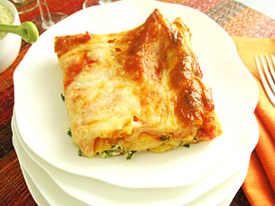

Home
Lasagna

Description
The Lasagna recipe is a great recipe that you can follow to get the image above on your plate.
Ingredients
- 2 extra-large eggs (lightly beaten)
- 15 ounces of ricotta cheese
- 10 ounces of frozen spinach - defrost and squeeze dry
- 3/4 cup of grated parmesan cheese - divided
- 1 teaspoon of salt
- 1/3 teaspoon of ground pepper
- 1 teaspoon of oregano
- 26 ounces of spaghetti sauce
- 10 sheets of no-boil lasagna noodles
- 1 pound of shredded mozzarella cheese - divided
Steps
- Preheat the oven to 400 degrees F.
-
Ricotta Mixture: In a medium bowl combine eggs, ricotta cheese, spinach, 1/2 cup of the parmesan cheese, oregano, salt and pepper.
-
Layer the ingredients in a 9 x 13 x 1 inch pan, in the following order:
-
Layer one:
- 3/4 cup of the Sauce
- 3 Sheets of pasta
- 3/4 cup of the Sauce
- 1/2 of Ricotta Mixture
- 1 and 1/3 cups of the Mozzarella
-
Layer two:
- 3 sheets of Pasta
- 3/4 cup of the Sauce
- 1/2 of Ricotta Mixture
- 1 and 1/3 cups of the Mozzarella
-
Layer three:
- 4 Sheets of pasta
- 3/4 cup of the Sauce
- 1 and 1/3 cups of the Mozzarella
- 1/4 cup Parmesan Cheese
- Bake for 30 minutes, until the sauce is bubbling.